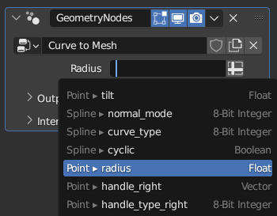
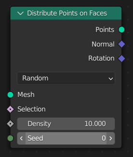
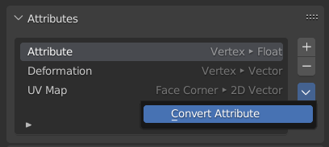

Attributes¶
Attribute là thuật ngữ chung dùng để mô tả dữ liệu được lưu theo từng phần tử trong một data-block hình học. Ví dụ, mỗi vertex có thể có một số hoặc vector liên kết với nó. Các attribute có thể được thay đổi bằng cách kết nối một giá trị vào node Group Output, nhưng nhiều node khác cũng có thể thay đổi giá trị của các attribute cụ thể.
Ghi chú
Kiểu dữ liệu và domain của attribute được chuyển đổi ngầm khi có thể, giống như các node socket.
Attribute có tên¶
Các attribute có tên được tạo và sử dụng trong những vùng khác của Blender như shader, vẽ (painting) và UV mapping. Trong panel modifier, một attribute có tên có thể được dùng làm đầu vào bằng cách nhấp vào biểu tượng ở bên phải nút giá trị. Ô nhập chuỗi cho phép bạn tìm kiếm và chọn các attribute hiện có từ hình học đầu vào của modifier.

Tìm kiếm attribute.¶
Chức năng tìm kiếm attribute cung cấp một ít thông tin bối cảnh về từng attribute. Ở bên trái menu, domain của attribute được hiển thị, theo sau là tên attribute. Ở bên phải menu, kiểu dữ liệu của attribute được hiển thị.
Attribute ẩn danh¶

Các đầu ra Normal và Rotation là ví dụ về attribute field, trỏ đến một attribute được lưu trên hình học.¶
Attribute ẩn danh là một tập dữ liệu chung được lưu trên hình học mà không có tên. Thông thường, các attribute hiển thị trong giao diện của Blender đều có tên. Tuy nhiên, trong geometry nodes, attribute có thể được truyền đi qua các node socket. Trong những trường hợp này, một đầu ra Attribute Field sẽ được tạo, để các node dùng tìm dữ liệu attribute trong hình học đầu vào.
Attribute ẩn danh vẫn được lưu trên hình học giống như các attribute khác, và thậm chí còn được tự động nội suy khi hình học bị thay đổi bởi các node khác, trừ một vài trường hợp. Vì vậy nhìn chung, nếu node link vẫn còn truy cập được thì attribute mà nó tham chiếu tới cũng vẫn sẵn sàng. Tuy nhiên, attribute ẩn danh không thể được kết nối tới một hình học hoàn toàn tách biệt được tạo từ một nguồn khác. Để chuyển attribute giữa các hình học tách biệt, có thể dùng Sample Index Node hoặc các node tương tự như Sample Nearest Surface Node.
Kiểu dữ liệu của attribute¶
Kiểu của một attribute là loại dữ liệu được lưu tại mỗi phần tử.
- Float:
Một giá trị dấu phẩy động đơn, thường dùng cho trọng số hoặc các giá trị cường độ.
- Boolean:
Giá trị đúng hoặc sai cho các điều kiện nhị phân.
- Integer:
Số nguyên 32-bit, dùng cho chỉ số (index) hoặc các giá trị rời rạc.
- Vector:
Vector 3D với các giá trị dấu phẩy động, thường biểu thị hướng hoặc vị trí.
- Color:
Màu RGBA với các giá trị dấu phẩy động 32-bit, được lưu trong Color Space tuyến tính. Phù hợp cho màu high dynamic range và wide-gamut.
- Byte Color:
Màu RGBA với các giá trị nguyên dương 8-bit, hữu ích cho việc lưu trữ màu gọn nhẹ. Chúng luôn được lưu trong Color Space sRGB. Đối với quy trình làm việc wide gamut hoặc tuyến tính, hãy dùng kiểu Color thay thế.
- String:
Chuỗi văn bản dùng để lưu tên hoặc nhãn.
- Vector 2D:
Vector hai chiều với các giá trị dấu phẩy động, thường dùng cho tọa độ UV.
- Vector 4D:
Vector bốn chiều với các giá trị dấu phẩy động, thường dùng cho quaternion xoay.
- Số nguyên 8-bit:
Số nguyên nhỏ với dải giá trị từ -128 đến 127.
- Vector số nguyên 16-bit 2D:
Vector 2D 16-bit có dấu để lưu gọn các cặp số nguyên.
- Vector số nguyên 2D:
Vector 2D 32-bit có dấu.
- Quaternion:
Xoay Quaternion dạng dấu phẩy động dùng trong các phép biến đổi 3D.
- Ma trận 4x4:
Ma trận dấu phẩy động dùng cho các phép biến đổi hoặc lưu trữ quan hệ không gian.
Danh sách trên được sắp theo thứ tự từ ít "phức tạp" đến phức tạp nhất (một số nguyên chứa được nhiều dữ liệu hơn một boolean nên phức tạp hơn). Khi nối các hình học tách biệt lại với nhau, kiểu dữ liệu phức tạp hơn sẽ được ưu tiên khi có các tên trùng khớp. Điều này đặc biệt quan trọng khi nối hình học có các attribute có tên bằng Join Geometry Node.
Để lưu Vector 2D (UV map) và Byte Color, phải dùng Node Store Named Attribute vì không có socket cho những kiểu đó.
Chuyển đổi dữ liệu¶
Nhờ sử dụng Geometry Nodes, dữ liệu có thể được chuyển đổi giữa các kiểu.
Các chuyển đổi hợp lệ:
Giữa color và vector -- ánh xạ giữa các kênh màu và các thành phần của vector.
Giữa color và float -- dữ liệu màu được chuyển đổi sang mức xám tương đương.
Giữa float và integer -- số nguyên đơn giản trở thành số thực, số thực bị cắt phần thập phân.
Giữa float và vector -- khi một số thực trở thành vector, giá trị đó được dùng cho từng thành phần. Khi một vector trở thành số thực, trung bình cộng của các thành phần sẽ được lấy.
Giữa float và boolean -- giá trị lớn hơn 0 là true, true ánh xạ thành 1 và false ánh xạ thành 0.
Khởi tạo mặc định¶
Attribute luôn có một giá trị được xác định rõ ràng. Trong trường hợp giá trị của một attribute được đọc từ một phần hình học mà giá trị của nó chưa từng được chỉ định trước khi đọc, giá trị của attribute đó sẽ được khởi tạo mặc định trên phần hình học ấy. Điều này áp dụng cho dù attribute đó có tên hay ẩn danh. Giá trị khởi tạo mặc định phụ thuộc vào kiểu dữ liệu của attribute đó:
- Float:
0
- Boolean:
False
- Integer:
0
- Vector:
(0, 0, 0)
- Color:
(0, 0, 0, 0)
- Byte Color:
(0, 0, 0, 0)
- String:
Chuỗi rỗng.
- Vector 2D:
(0, 0)
- Vector 4D:
(0, 0, 0, 0)
- Số nguyên 8-bit:
0
- Vector số nguyên 16-bit 2D:
(0, 0)
- Vector số nguyên 2D:
(0, 0)
- Quaternion:
(1, 0, 0, 0)
- Ma trận 4x4:
Ma trận với mọi thành phần được đặt bằng 0.
Domain của attribute¶
Domain của một attribute chỉ loại phần tử hình học mà attribute đó tương ứng. Việc biết domain của attribute rất quan trọng vì nó xác định cách attribute có thể được nội suy và sử dụng trong các node và shading. Bạn có thể dùng Spreadsheet Editor để xác định domain của các attribute.
- Các attribute domain Point được gắn với các vị trí đơn lẻ trong không gian, kèm một tọa độ:
Vertex của một mesh
Point của một point cloud
Điểm điều khiển của curve
Các attribute domain Edge được gắn với các edge của một mesh.
Các attribute domain Face được gắn với các face của một mesh.
Các attribute domain Face Corner được gắn với các góc của các face trong mesh. Một ví dụ là attribute UV map.
Các attribute domain Spline được gắn với một nhóm điểm điều khiển curve được nối với nhau.
Các attribute domain Instance tồn tại trên các Instances trong một hình học. Chúng có thể được dùng để lưu các giá trị khác nhau trên các bản sao của dữ liệu hình học. Attribute domain instance chỉ được hỗ trợ trong geometry nodes.
Các attribute domain Layer được gắn với một Lớp Grease Pencil.
Các attribute được tự động nội suy sang các domain khác. Ví dụ, khi Position Node được nối vào đầu vào selection của node Set Material Node, các giá trị được nội suy từ domain Point sang domain Face. Bình thường, việc chuyển đổi domain dùng trung bình cộng đơn giản cho các giá trị, nhưng attribute kiểu dữ liệu Boolean có các quy tắc nội suy đặc biệt:
Nội suy domain Boolean¶
Từ |
Đến |
Conversion |
|---|---|---|
Point |
Edge |
Một edge được chọn nếu cả hai vertex của nó đều được chọn. |
Point |
Face |
Một face được chọn nếu tất cả vertex của nó cũng được chọn. |
Point |
Corner |
Giá trị của mỗi corner chỉ là bản sao của giá trị tại vertex của nó. |
Point |
Spline |
Một spline được chọn nếu tất cả điểm điều khiển của nó đều được chọn. |
Edge |
Point |
Một vertex được chọn nếu bất kỳ edge nào nối với nó được chọn. |
Edge |
Face |
Một face được chọn nếu tất cả edge của nó đều được chọn. |
Edge |
Corner |
Một corner được chọn nếu hai edge kề với nó đều được chọn. |
Face |
Point |
Một vertex được chọn nếu bất kỳ face nào nối với nó được chọn. |
Face |
Edge |
Một edge được chọn nếu bất kỳ face nào nối với nó được chọn. |
Face |
Corner |
Giá trị của mỗi corner chỉ là bản sao của giá trị tại face của nó. |
Corner |
Point |
Một vertex được chọn nếu tất cả face corner nối với nó đều được chọn và nó không phải là vertex rời (loose vertex). |
Corner |
Edge |
Một edge được chọn nếu tất cả corner trên các face kề với nó đều được chọn. |
Corner |
Face |
Một face được chọn nếu tất cả corner của nó đều được chọn. |
Spline |
Point |
Giá trị của mỗi point chỉ là bản sao của giá trị tương ứng của spline. |
Attribute có sẵn¶
Các attribute có sẵn luôn tồn tại và không thể bị xóa. Kiểu dữ liệu và domain của chúng không thể thay đổi.
Name |
Type |
Domain |
Ghi chú |
|---|---|---|---|
|
Vector |
Point |
Attribute có sẵn mô tả vị trí của vertex hoặc point, trong không gian cục bộ của một hình học. Bất kỳ node nào thay đổi vị trí của các điểm đều sẽ điều chỉnh attribute này, chẳng hạn như Transform Geometry Node và Node Set Position. |
|
Float |
Point |
Attribute có sẵn trên point cloud dùng để đặt kích thước của các point trong viewport. Cũng là attribute có sẵn trên curve, nơi nó kiểm soát kích thước của từng điểm điều khiển curve khi được chuyển thành mesh, hoặc cho các thao tác khác. |
|
Integer |
Point |
Được tạo bởi Distribute Points on Faces để đảm bảo tính ổn định khi hình dạng của mesh đầu vào thay đổi, và được dùng trên các instance để tạo motion blur. Các giá trị được kỳ vọng là lớn và không theo thứ tự. Attribute này được dùng bởi các node tạo tính ngẫu nhiên, như Node Random Value. Khác với các attribute có sẵn khác, attribute này không bắt buộc và có thể bị xóa. |
|
Integer |
Face |
Dùng để chỉ định material slot cho mỗi face trong một mesh. |
|
Boolean |
Edge |
Attribute xác định xem một edge có nên được bật shading phẳng (flat thay vì smooth) trong viewport hay trong bản render. |
|
Boolean |
Face |
Attribute xác định xem một face có nên được bật shading phẳng (flat thay vì smooth) trong viewport hay trong bản render. |
|
Integer |
Spline |
Xác định số lượng điểm được đánh giá giữa hai điểm điều khiển của một spline. Chỉ các spline NURBS và Bézier mới có attribute này; với poly spline, giá trị luôn bằng một. |
|
Boolean |
Spline |
Xác định spline có một đoạn nối điểm điều khiển đầu tiên và điểm điều khiển cuối cùng hay không. |
|
Vector |
Point |
Mô tả vị trí handle trái của một điểm điều khiển curve, ở phía bắt đầu curve. Chỉ tồn tại khi curve chứa một spline Bézier. |
|
Vector |
Point |
Mô tả vị trí handle phải của một điểm điều khiển curve, ở phía kết thúc curve. Chỉ tồn tại khi curve chứa một spline Bézier. |
Quy ước đặt tên¶
Các attribute này không tồn tại theo mặc định, nhưng được dùng ngầm định bởi một số bộ phận của Blender. Kiểu dữ liệu của chúng có thể thay đổi, giống như mọi attribute khác ngoài các attribute có sẵn. Tuy nhiên, Blender có thể kỳ vọng các attribute này thuộc một kiểu nhất định.
Name |
Type |
Domain |
Ghi chú |
|---|---|---|---|
|
Float |
Point |
Dùng làm điều khiển vertex cho bevel modifier. |
|
Float |
Edge |
Dùng làm điều khiển edge cho bevel modifier. |
|
Float |
Edge |
Attribute edge được dùng bởi Subdivision Surface modifier. Các giá trị được kỳ vọng nằm trong khoảng từ 0 đến 1. |
|
Float |
Point |
Attribute vertex được dùng bởi Subdivision Surface modifier. Các giá trị được kỳ vọng nằm trong khoảng từ 0 đến 1. |
|
2D 16-Bit Integer Array |
Face Corner |
Được dùng bởi Custom Split Normals cho các mesh object. |
|
Boolean |
Edge |
Được dùng bởi Edge Marks cho các mesh object. |
|
Boolean |
Edge |
Được dùng bởi Face Marks cho các mesh object. |
|
Vector |
Point |
Lưu vị trí của các point hoặc vertex từ trước khi hình học bị biến đổi theo thủ tục. Có thể được tạo tự động trước khi Shape Key và Modifier được tính toán với tùy chọn Add Rest Position. |
|
Integer |
Face |
Được dùng bởi tính năng Sculpt Face Sets. |
|
Float |
Point |
Được dùng bởi tính năng Sculpt Masking. |
|
2D Vector |
Curve |
Dùng để mô tả các vị trí gắn curve trên bề mặt mesh, thường được dùng cho hệ thống hair. |
|
Boolean |
Edge |
True nếu một edge được coi là ranh giới giữa các UV island khi unwrap. |
|
Vector |
Point |
Dùng để tạo motion blur khi render animation. |
Attribute tùy chỉnh¶
Vertex group, UV map và Color Attribute đều dùng được như attribute trong geometry nodes. Chúng được tham chiếu bằng tên của mình. Nên tránh việc trùng tên (ví dụ một vertex group và một UV map cùng tên). Nếu có sự trùng tên, chỉ một trong các attribute là truy cập được trong geometry nodes.
Các attribute với bất kỳ tên nào khác cũng có thể được tạo bởi node, khi tên đó được dùng lần đầu tiên.
Lưu ý rằng geometry nodes không phải lúc nào cũng tạo ra ví dụ vertex group nếu một node như Join Geometry được sử dụng. Tương tự, nếu kiểu dữ liệu của một attribute vertex group bị thay đổi khỏi kiểu "Float" ban đầu, attribute đó sẽ không còn là vertex group nữa.
Operator chuyển đổi attribute¶

Operator này nằm trong panel Attributes của property editor, có thể thay đổi domain hoặc kiểu dữ liệu của một attribute.
Do việc phát triển trong lĩnh vực attribute vẫn đang tiếp diễn, nhiều vùng của Blender chưa làm việc được với các attribute chung (được nhận diện bằng tên, lưu trên bất kỳ domain nào với bất kỳ kiểu dữ liệu nào) mà geometry nodes sử dụng. Điều đó khiến operator này trở thành giải pháp thay thế thiết yếu trong một số trường hợp phải dùng các công cụ hiện có với dữ liệu được tạo từ geometry nodes.
- Mode
- Generic:
Nội suy và chuyển đổi attribute giữa các domain và kiểu dữ liệu được mô tả trong trang này.
- Vertex Group:
Tạo một Vertex Group từ attribute, tương ứng với một attribute kiểu float trên domain point.
Ghi chú
Operator này chỉ tác động trên dữ liệu object gốc, không bao gồm kết quả của các modifier, nên mọi attribute được thêm hoặc thay đổi bởi geometry nodes sẽ không bị ảnh hưởng. Để thay đổi kiểu của một attribute được tạo theo thủ tục, cần áp dụng (apply) các modifier.